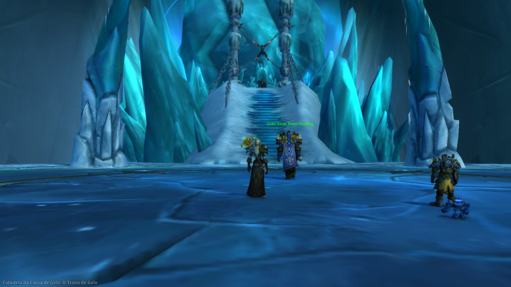

Depois de acabar com todos os fronts de guerra do Lich Rei, dando uma extrema vantagem para Horda, fui encontrada por um sábio mago engenheiro que estava disposto a lutar ao meu lado contra as forças do Flagelo. Tomamos coragem, e munidos das forças da cruzada argentea enfrentamos diversos desafios até lutar contra o nosso tão temido inimigo, o Lich Rei. A luta foi difícil e assustadora, porém, devido a coragem de meu companheiro nós o fizemos sucumbir perante a força. Agora, contudo, reflito sobre tudo que se passou, quantos amigos perdi nesta luta, quanto sangue rolou.
Não sei mais o que refletir. Apenas vejo o meu futuro como algo nebuloso.
O novo chefe guerreiro da Horda, Garrosh, me enviou uma carta para que eu vá, rumo aos reinos do leste, ajudar a horda em alguns frontes. O que será que vai acontecer agora.